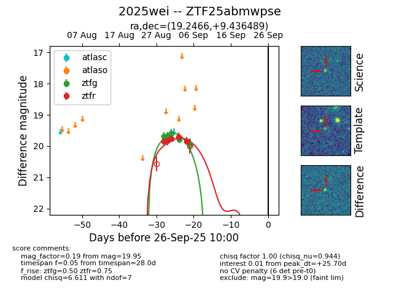
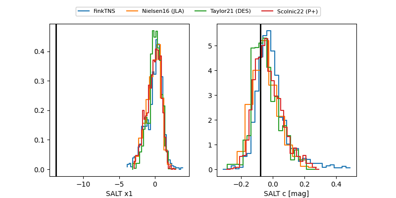

FINK: ZTF25abmwpse
Lasair: ZTF25abmwpse
ALeRCE: ZTF25abmwpse
TNS: 2025wei
YSE: 2025wei
ZTF25abmwpse (ztf,fink)
2025wei (tns,yse)
equatorial (ra, dec) = (19.2466,+9.43649)
galactic (l, b) = (133.4175,-52.91433)


last ztfg=19.95, ztfr=19.84
5 ztfg, 5 ztfr detections